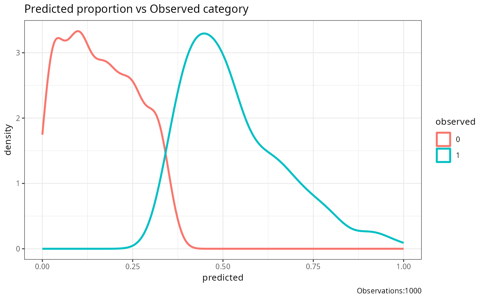

plot_separability.RdThis function creates a separability plot showing the density distribution of predicted probabilities for different observed categories.
plot_separability(observed, predicted, base_size = 10, title = "")Vector of observed outcomes. This can be numeric or factor values representing the true class labels.
Vector of predicted outcome probabilities. This should have the same length as the observed vector and represent the predicted probabilities.
Integer value representing the base font size for the plot. Defaults to 10.
String representing the title of the plot. Defaults to an empty string.
This function generates a separability plot using ggplot2. It shows the density distribution of predicted probabilities for different observed categories. The plot helps to visualize how well the predicted probabilities separate the different observed categories.
The plot includes the following components: -Density curves for each observed category,representing the distribution of predicted probabilities. -A legend indicating the observed categories. -The total number of observations is included in the plot caption.
# Example with numeric class labels
df1<-data.frame(matrix(.999,ncol=2,nrow=2))
correlation_matrix<-as.matrix(df1)
diag(correlation_matrix)<-1
df1<-generate_correlation_matrix(correlation_matrix,nrows=1000)
df1$X1<-ifelse(abs(df1$X1) < 1,0,1)
df1$X2<-abs(df1$X2)
df1$X2<-(df1$X2-min(df1$X2))/(max(df1$X2)-min(df1$X2))
plot_separability(observed=round(abs(df1$X1),0),predicted=abs(df1$X2))
